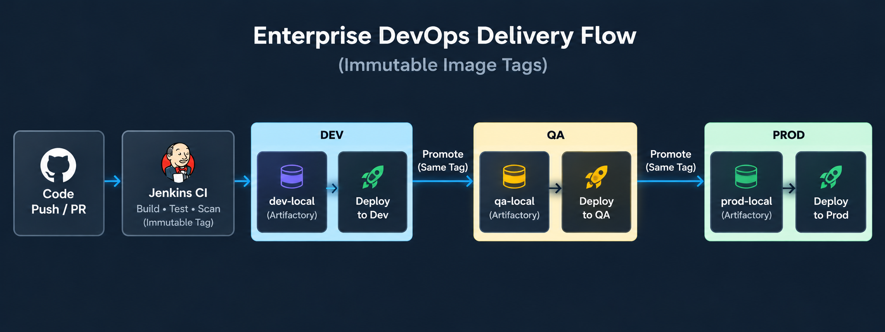

Real-World DevOps Engineer Responsibilities — PayPulse Technologies (30-Day Enterprise Operational Case Study)¶
1. Enterprise Profile, Scale & Hybrid Toolchain¶
PayPulse Technologies is a fast-growing FinTech and merchant payment platform (300+ employees, 14–15 cross-functional product development squads, 20–50+ microservices each) delivering real-time checkout gateways, merchant settlements, digital wallets, fraud analytics, and core banking ledger APIs.

Core DevOps Tools, Baseline Versions & Hosting Matrix (As of August 2, 2026)¶
| DevOps Tool & Internal Endpoint | Hosting & Deployment Model | Baseline Version (Aug 2, 2026) | Non-Prod TLS Expiry | Production TLS Expiry |
|---|---|---|---|---|
SonarQube Serversonar.internal.paypulse.com |
On-Premises Linux VM | 2026.1 LTA | Aug 4, 2026 (⚠️ 2 days) | Aug 23, 2026 (⚠️ 21 days) |
Jenkins Controllerjenkins.internal.paypulse.com |
AWS Cloud Dedicated EC2 (m6i.2xlarge, gp3 EBS, Java 21) |
v2.552.3 LTS | Oct 14, 2026 | Nov 28, 2026 |
Argo CD GitOpsargocd.internal.paypulse.com |
Multi-Cluster Controller on AWS EKS | v3.1.x | Sep 18, 2026 | Oct 22, 2026 |
PostgreSQL Databasepostgres.internal.paypulse.com |
On-Premises Dedicated Linux VM (Backing SonarQube & Artifactory) | v16.3 | Dec 10, 2026 | Dec 10, 2026 |
JFrog Artifactory HAartifactory.internal.paypulse.com |
On-Premises 2-Node Enterprise Cluster | v7.84.x Enterprise ($N-1$) | Jan 12, 2027 | Feb 15, 2027 |
| NGINX Ingress Proxies Reverse Proxy Fleet |
NGINX (TLS Ingress for Cloud & On-Prem Tools) | v1.26.x Stable | Mar 15, 2027 | Mar 15, 2027 |
| GitHub Enterprise | Enterprise Cloud SaaS Organization | Managed SaaS | N/A (SaaS) | Auto-Rotated TLS 1.3 |
2. Team Operating Model & Boundary¶
- Platform Boundary: Cloud accounts, VPC networking, and Kubernetes infrastructure are provisioned by the Cloud Platform Team. The DevOps Delivery Team focuses purely on CI/CD pipelines, shared libraries (
paypulse-shared-library), container packaging, multi-registry replication, deployments, and operational reliability. - Cross-Functional Fleet (Zero Tool Silos): A 4-engineer unit (Marcus [Lead], Alex, Priya, Sam) where every engineer operates, builds, and troubleshoots any component in the stack without single-person bottlenecks.
- SOP-Driven Governance: Standardized via Confluence runbooks (SOP-01 to SOP-05) covering TLS rotations, platform upgrades, application CI onboarding, repo provisioning, and incident RCAs.
3. 33-Day Operational Roster (August 3 – September 4, 2026: 5-Week Sprint Cycle)¶
Sprint work is tracked in Jira project DEVOPS across two 2-week sprints (Sprint 24 and Sprint 25) followed by the kickoff of Sprint 26, spanning 33 calendar days (25 business working days plus weekend maintenance windows). The team operates on a strict 70% planned / 30% operational support capacity split:
- Story & Task (70% Planned): Pipeline onboarding, shared library features, dynamic builder agent images, and scheduled platform maintenance (1–5 days).
- Bug (30% Buffer): Unplanned build unblocking, pipeline interrupts, and incident remediations (hours to 1–2 days).
Week 1: August 3 – August 9 (Sprint 24 Kickoff, Non-Prod Certs & Daily Jira Firefighting)¶
Day 1 — Monday, August 3, 2026 (Sprint 24 Kickoff, Non-Prod SonarQube TLS Renewal & Artifactory License Update)¶
- Marcus:
- Host Sprint 24 Planning (10:00 – 11:30 AM). Review velocity and allocate capacity across planned epics and support buffer (70% planned / 30% operational support).
- Lead discovery meeting with Squad 4 (Core Payments Lead & Architect). Create Jira Epic
DEVOPS-100(Onboard Payments API to CI/CD) and user storiesDEVOPS-101throughDEVOPS-104. - Submit RFC/CAB for Aug 15 Production Maintenance Window (CR-9482: SonarQube Production TLS Renewal & Host Patching).
- Alex:
- [DEVOPS-101: Story - In Progress - Day 1 of 3 (Shared Library Branch & Maven Cache Config)] Branch
paypulse-shared-library; begin prototyping remote Artifactory cache configuration for Maven dependencies injava_maven.groovy. - [DEVOPS-501: Bug / High — Triaged → Zombie Container Killed → Closed in 12 min] Interrupted by Squad 3 escalation: "PR pipeline stuck in pending state" blocking an urgent hotfix for Customer Onboarding. Alex investigates while developers ping frantically in
#devops-support. Discovers a zombie Jenkins agent container holding a locked workspace on agent node 4. Safely kills orphaned container and unblocks the PR queue in 12 minutes.
- [DEVOPS-101: Story - In Progress - Day 1 of 3 (Shared Library Branch & Maven Cache Config)] Branch
- Priya:
- [DEVOPS-102: Story - In Progress - Day 1 of 3 (Squad Discovery & CI Parameters)] Meet with Squad 4 engineers to define CI
Jenkinsfilebuild parameters and test profiles. Register SonarQube 2026.1 LTA project keys for Payments Gateway. - [DEVOPS-310: Task - Closed - JFrog Artifactory Enterprise License Renewal on Non-Prod & Prod] Receive renewed annual JFrog Artifactory Enterprise license bucket from Procurement. Apply license keys via Artifactory REST API (
POST /artifactory/api/system/licenses) across Non-Prod and Production clusters on the same day. Verify zero-downtime hot reload, 2-node active-active HA cluster health, and valid expiration date extended to August 2027 without interrupting active package downloads or CI builds. - Review and triage incoming DevOps support queue; assign tickets for Sprint 24.
- [DEVOPS-102: Story - In Progress - Day 1 of 3 (Squad Discovery & CI Parameters)] Meet with Squad 4 engineers to define CI
- Sam:
- [DEVOPS-301: Task - In Progress - Day 1 of 2 (Non-Prod SonarQube CA Cert Ingestion & Dev Ingress Deploy)] Non-Prod SonarQube TLS Renewal: Receive renewed dedicated SonarQube certificate (
sonar.nonprod.internal.paypulse.com) from Corporate CA. Deploy new certificate to Non-Prod reverse proxy for Dev SonarQube. Runtest-tls-handshake.sh; confirm August 2027 expiration and valid trust chain.
- [DEVOPS-301: Task - In Progress - Day 1 of 2 (Non-Prod SonarQube CA Cert Ingestion & Dev Ingress Deploy)] Non-Prod SonarQube TLS Renewal: Receive renewed dedicated SonarQube certificate (
Day 2 — Tuesday, August 4, 2026¶
- Marcus: Daily standup (9:30 AM). Sync with Cloud Platform Lead (David) regarding QA cluster endpoint availability and application service account namespaces for Payments.
- Alex:
- [DEVOPS-101: Story - In Progress - Day 2 of 3 (Docker Multi-Stage Build Optimization)] Test
docker.groovymulti-stage build optimization for Payments BE using Java 21 Distroless base image. Image build time reduced by 45%. - Peer review: Review Priya's PR for SonarQube project automation.
- [DEVOPS-101: Story - In Progress - Day 2 of 3 (Docker Multi-Stage Build Optimization)] Test
- Priya:
- [DEVOPS-105: Story - Application Squad Request: Add Java 21 LTS & Node.js 22 LTS CI Agent Templates] Application Squads 4 (Core Payments) and 14 (Merchant Portal) submit Jira requirements to support Java 21 LTS (Eclipse Temurin) and Node.js 22 LTS (Iron) container runtimes for their active microservices. Priya updates
vars/java_maven.groovy,vars/nodejs.groovy, and dynamic Kubernetes agent pod specs inpaypulse-shared-librarywith pre-warmed dependency caches, decreasing clean build cycles by 40%. - [DEVOPS-102: Story - In Progress - Day 2 of 3 (SonarQube PR Decoration Testing)] Audit Project #16 pull request workflow. Verify that PR decoration on GitHub Enterprise displays SonarQube quality gate status.
- [DEVOPS-502: Bug / Blocker — Triaged → Maven Virtual Cache Re-Indexed → Closed in 20 min] Squad 2 developer escalates that their Maven build suddenly fails with
Checksum validation failed for internal-security-lib.jar. Developer is under pressure before a partner demo. Priya investigates Artifactory metadata; discovers a corrupted SHA-256 checksum caused by an interrupted deployment earlier that morning. Re-indexes the Maven virtual cache and triggers a clean re-fetch, resolving the blocker in 20 minutes.
- [DEVOPS-105: Story - Application Squad Request: Add Java 21 LTS & Node.js 22 LTS CI Agent Templates] Application Squads 4 (Core Payments) and 14 (Merchant Portal) submit Jira requirements to support Java 21 LTS (Eclipse Temurin) and Node.js 22 LTS (Iron) container runtimes for their active microservices. Priya updates
- Sam:
- [DEVOPS-301: Task - Closed - Verified (Non-Prod SonarQube TLS Handshake Verified & Live)] Validate non-prod SonarQube endpoint across developer workstations; confirm August 2027 expiration; close ticket.
- [DEVOPS-401: Task - Closed - GitHub Enterprise Repo Provisioned for Application Squad 1 (paypulse-ledger-event-consumer)] Squad 1 requests dedicated repo for their new Kafka transaction consumer service. Sam provisions repository per SOP-05: scaffolds templates, enforces linear history & signed commits, configures branch protections requiring 2 peer approvals on
main, and binds GitHub teamsquad-1-devswith write access. - [DEVOPS-115: Task - In Progress - Day 1 of 2 (EKS QA Helm Deployment Verification)] Test
kubernetes_helm.groovydeployment to EKS QA namespace inus-east-1(eks-us-east-1-qa). Confirm Helm release history and revision tracking.
Day 3 — Wednesday, August 5, 2026¶
- Marcus:
- Daily standup. Discovery meeting with Squad 7 (Customer Loyalty & Mobile Lead). Create Jira Epic
DEVOPS-110(Flutter Loyalty App CI/CD) and storyDEVOPS-110. - Review SonarQube scan coverage thresholds (80% baseline across all squads).
- Daily standup. Discovery meeting with Squad 7 (Customer Loyalty & Mobile Lead). Create Jira Epic
- Alex:
- [DEVOPS-101: Story - Closed - Merged (PR #88 Passed & QA Verification)] Finalize integration tests for
java_maven.groovy, open PR #88, pass peer review with Priya, and merge to release branch. Close ticket. - [DEVOPS-110: Story - In Progress - Day 1 of 3 (Flutter Android Agent Dockerfile Spike)] Pick up Flutter mobile agent story; begin constructing Dockerfile with Android SDK command-line tools.
- [DEVOPS-101: Story - Closed - Merged (PR #88 Passed & QA Verification)] Finalize integration tests for
- Priya:
- [DEVOPS-102: Story - Closed - Merged (FastAPI Pipeline Deployed & Verified)] Onboard Project #16 Kafka event producer service (Python FastAPI). Configure
python.groovywith pytest and flake8 linting. Merge configuration and close ticket. - [DEVOPS-103: Story - In Progress - Day 1 of 2 (Kafka KRaft Broker Sidecar Testing)] Assist Squad 4 in architecting integration test stage with KRaft-based Kafka broker running as a sidecar container in Jenkins pod.
- [DEVOPS-102: Story - Closed - Merged (FastAPI Pipeline Deployed & Verified)] Onboard Project #16 Kafka event producer service (Python FastAPI). Configure
- Sam:
- [DEVOPS-115: Task - Closed - Verified (EKS QA Helm Deployment Validated)] Complete Helm deployment validation in QA namespace; close task.
- [DEVOPS-106: Task - In Progress - Day 1 of 2 (S3/CloudFront Cache Configuration)] Test
s3_cloudfront.groovyfor React merchant portal: verify S3 bucket sync, cache-control headers (max-age=31536000for assets), and CloudFront invalidation. - [DEVOPS-503: Bug / High — Triaged → Helm Secret Injected → Closed in 15 min] Squad 5 developer reports QA Ingress endpoint returns
HTTP 502 Bad Gateway. Developer assumes an EKS outage. Sam inspects EKS Pod logs; identifies that the microservice container crashed due to an unset environment variable (KAFKA_BROKER_URL). Guides developer to add the missing secret in their Helm values file, restoring service immediately.
Day 4 — Thursday, August 6, 2026¶
- Marcus: Daily standup. Mid-week sprint burndown check. Review QA telemetry in Datadog.
- Alex:
- [DEVOPS-110: Story - In Progress - Day 2 of 3 (Gradle Cache Mount & Build Time Tuning)] Optimize Flutter build times using persistent agent Gradle cache volume; build duration reduced from 22 minutes to 9 minutes.
- [DEVOPS-504: Bug / Medium — Triaged → Jacoco XML Path Fixed → Closed in 30 min] Squad 8 reports SonarQube quality gate failed on an urgent PR with
Coverage is 0%, despite unit tests passing locally. Alex context-switches off Flutter optimization to pair with developer. Discovers Jacoco XML report path misconfigured inpom.xml(target/site/jacocovstarget/jacoco.exec). Corrects parameter injava_maven.groovy, allowing the PR to pass. - [DEVOPS-403: Task - Closed - GitHub Enterprise Repo Provisioned for Application Squad 4 (paypulse-payments-event-router)] Squad 4 requests a new repo for their Kafka event router microservice. Alex provisions the repo, registers SonarQube quality gate keys, and pre-populates the standard CI
Jenkinsfiletemplate.
- Priya:
- [DEVOPS-103: Story - Closed - Merged (Dynamic Broker Integration Tests Passed)] Validate KRaft Kafka broker sidecar in dynamic agent pods. Complete test documentation and close ticket.
- [DEVOPS-402: Task - Closed - GitHub Enterprise Repo Provisioned for On-Prem Infrastructure Team (paypulse-datacenter-san-cleaner)] On-Prem data center team requests a private repository for automated SAN storage pruning scripts. Priya creates the repository with standard Python templates, pre-commit flake8 hooks, and grants write access to Entra ID group
onprem-infra-engineers. - Prepare SonarQube quality gate compliance report for weekly platform sync.
- Sam:
- [DEVOPS-106: Task - Closed - Merged (S3/CloudFront Cache Headers & Invalidation Verified)] Validate asset caching and cache invalidation on CloudFront staging distribution; merge and close ticket.
- [DEVOPS-320: Task - In Progress - Day 1 of 2 (Jenkins Controller Upgrade Sandbox Dry-Run)] Prepare QA sandbox environment for Jenkins controller upgrade dry-run ($N-1$
v2.552.3$\rightarrow$v2.568.2 LTS). Audit plugin compatibility list.
Day 5 — Friday, August 7, 2026 (Incident A: QA Migration Failure)¶
- Marcus: [INC-0807-01 / SEV-2] QA deployment in
kubernetes_helm.groovyfails due to PostgreSQL lock timeout during Flyway migration. Coordinate with Squad 4 Lead; invoke automatic Helm rollback to previous stable release. Create post-incident Jira action itemDEVOPS-104andSOP-03update. - Alex:
- [DEVOPS-104: Story - In Progress - Day 1 of 2 (Flyway Migration Dry-Run Step Architecture)] Update
java_maven.groovyShared Library step to include optionaldbMigrationCheck: trueparameter executing FlywaydryRun. - [DEVOPS-110: Story - Closed - Merged (Android Agent Released to Artifactory)] Push validated Flutter Android agent to Artifactory; update
vars/docker.groovyagent labels; close story.
- [DEVOPS-104: Story - In Progress - Day 1 of 2 (Flyway Migration Dry-Run Step Architecture)] Update
- Priya:
- Document
java_maven.groovymigration dry-run check parameters in developer onboarding portal (Confluence SOP-03). - [DEVOPS-505: Bug / Blocker — Triaged → Robot Token Rotated → Closed in 25 min] Concurrent with Incident A, Squad 9 developer raises urgent ticket: "Cannot pull base Docker image
paypulse-java21-base:latestin CI". Priya tracks failure to an expired Docker robot token in Jenkins credentials store. Rotates Artifactory service account token, updates Jenkins credentials via JCasC, and notifies developers.
- Document
- Sam:
- [DEVOPS-320: Task - Closed - Verified (QA JCasC Reload & SOP-01 Runbook Staged)] Execute Jenkins controller upgrade dry-run in QA sandbox VM. Document rollback procedure, verify JCasC config reload, stage runbook, and close ticket.
Day 6 — Saturday, August 8, 2026 (Weekend)¶
- Team: Scheduled Off. On-call rotation active.
Day 7 — Sunday, August 9, 2026 (Weekend)¶
- Team: Scheduled Off.
Week 2: August 10 – August 16 (CAB Preparation, Release Hardening & Prod Maintenance Window)¶
Day 8 — Monday, August 10, 2026¶
- Marcus:
- Sprint 24 Week 2 Kickoff standup. Review sprint burndown.
- Discovery meeting with Squad 6 (Merchant Settlements). Create Jira Epic
DEVOPS-140(Settlements Service CI/CD: Node.js BE + React FE). - Submit final CAB change ticket CR-9482 for Saturday Aug 15.
- Alex:
- [DEVOPS-104: Story - Closed - Merged (Flyway Dry-Run Step Tested & Merged to main)] Finalize testing of
dbMigrationCheck: trueinjava_maven.groovy, open PR #92, pass peer review with Priya, merge to release branch, and close ticket. - [DEVOPS-140: Story - In Progress - Day 1 of 2 (pnpm Cache & Jest Reporting)] Enhance
nodejs.groovyin Shared Library with automated pnpm/npm dependency caching and Jest code coverage reporting. - Peer review: Review Sam's Helm deployment script improvements.
- [DEVOPS-104: Story - Closed - Merged (Flyway Dry-Run Step Tested & Merged to main)] Finalize testing of
- Priya:
- [DEVOPS-141: Story - In Progress - Day 1 of 2 (Artifactory Virtual npm Repo Scaffolding)] Configure JFrog Artifactory virtual npm repository and scan policies for Settlements Service dependencies.
- [DEVOPS-404: Task - Closed - GitHub Enterprise Repo Provisioned for Application Squad 9 (paypulse-fraud-feature-store)] Squad 9 requests a new repository for their real-time fraud feature-store worker. Priya provisions repository per SOP-05 with Java/Maven
.gitignore, SonarQube integration, and branch protection onmainanddevelop.
- Sam:
- [DEVOPS-302: Task - In Progress - Day 1 of 4 (Prod SonarQube Cert Staging & verify-prod-tls.sh)] Maintenance Preparation: Pre-stage renewed production SonarQube certificate (
sonar.internal.paypulse.com) in the encrypted credential store. Author automated verification script (verify-prod-tls.sh) for Saturday's production maintenance window. - [DEVOPS-506: Bug / Blocker — Triaged → Stuck Helm Secret Cleaned → Closed in 20 min] Squad 1 developer frantically asks in Slack: "Helm deploy failed with
release payments-service has failed status and cannot be upgraded". Release train is held up. Sam identifies a stuck Helm pending-upgrade secret created when a build agent pod was abruptly evicted. Runshelm rollbackand cleans the pending release metadata, enabling the release to continue.
- [DEVOPS-302: Task - In Progress - Day 1 of 4 (Prod SonarQube Cert Staging & verify-prod-tls.sh)] Maintenance Preparation: Pre-stage renewed production SonarQube certificate (
Day 9 — Tuesday, August 11, 2026¶
- Marcus: Daily standup. Sync with Enterprise Security Architect on token expiration standards for Jenkins GitHub App credentials.
- Alex:
- [DEVOPS-140: Story - Closed - Merged (PR #95 Merged, Build 60% Faster)] Validate pnpm cache speedup (builds 60% faster); open PR, merge, and close ticket.
- [DEVOPS-130: Story - In Progress - Day 1 of 2 (Cosign Keyless Signing Integration)] Update
docker.groovyto enforce container image signing using Cosign and push signature metadata to Artifactory. - [DEVOPS-507: Bug / High — Triaged → Git History Rewritten & Pre-Receive Hook Enforced] A developer pushes a large 850MB mock test database file directly into Git, causing all Jenkins clones across 3 squads to time out over the internal network. Alex diagnoses the spike in agent network latency, identifies the commit with
git-sizer, works with developer to rewrite Git history usinggit-filter-repo, and adds a pre-receive hook in GitHub preventing commits > 50MB.
- Priya:
- [DEVOPS-141: Story - Closed - Merged (Virtual npm Resolution Configured)] Finalize virtual npm repository resolution order in Artifactory; author CI
Jenkinsfileand raise PR to Squad 6'sdevelopbranch.
- [DEVOPS-141: Story - Closed - Merged (Virtual npm Resolution Configured)] Finalize virtual npm repository resolution order in Artifactory; author CI
- Sam:
- [DEVOPS-308: Task - Closed - CI Runner Maintenance: Upgrade Terraform CI Runner Container to v1.10.0] Cloud Platform Team files a Jira task requesting DevOps upgrade the centralized Terraform runner from
v1.8.5to the latest Terraform CLIv1.10.0across thek8s-terraform-agentpod template for developer and cloud manifest validation. Sam builds and verifies the new runner container imagepaypulse-agent-terraform:v1.10.0withtfsec v1.28.1and confirms non-prod dry-runs execute cleanly. - [DEVOPS-302: Task - In Progress - Day 2 of 4 (Pre-Stage Prod Cert on Reverse Proxy)] Stage certificate on target NGINX reverse proxy configuration; verify fallback configuration.
- [DEVOPS-405: Task - Closed - GitHub Enterprise Repo Provisioned for Data Team (paypulse-analytics-aggregator)] Data team requests repo for analytics pipeline aggregation workers. Sam sets up repo with Python templates, linting workflow, and branch protections requiring 2 peer reviews.
- [DEVOPS-308: Task - Closed - CI Runner Maintenance: Upgrade Terraform CI Runner Container to v1.10.0] Cloud Platform Team files a Jira task requesting DevOps upgrade the centralized Terraform runner from
Day 10 — Wednesday, August 12, 2026 (Incident B: Simulated Supply-Chain Vulnerability)¶
- Marcus: [INC-0812-01 / SEV-1] JFrog Xray flags a simulated Critical remote code execution vulnerability (CVSS 9.8) in a shared npm logging library during Project #18
nodejs.groovybuild. Pipeline gate automatically blocks deployment. - Alex:
- [DEVOPS-130: Story - Closed - Merged (Cosign Verification Enforced in docker.groovy)] Finalize Cosign verification checks; merge to
vars/docker.groovy; close ticket. - Audit all 15 live microservice pipelines to determine vulnerability blast radius (2 services affected).
- [DEVOPS-130: Story - Closed - Merged (Cosign Verification Enforced in docker.groovy)] Finalize Cosign verification checks; merge to
- Priya:
- Collaborate with Squad 6 developers to pin patched library version; re-trigger pipeline; verify Xray clearance.
- [DEVOPS-508: Bug / High — Triaged → Chrome Agent Image Built & Labeled] Amidst the Xray vulnerability investigation, Squad 10 QA lead reports that their automated Cypress end-to-end test suite in Jenkins failed because headless Chrome binary was missing in dynamic node agent pod. Priya quickly creates an updated Docker agent image with Chrome pre-installed and updates agent label in
nodejs.groovy.
- Sam:
- [DEVOPS-302: Task - In Progress - Day 3 of 4 (Post-Incident Guardrail Verification & Cert Readiness)] Validate that
kubernetes_helm.groovyrejected unsigned container image deployment, confirming security guardrail.
- [DEVOPS-302: Task - In Progress - Day 3 of 4 (Post-Incident Guardrail Verification & Cert Readiness)] Validate that
Day 11 — Thursday, August 13, 2026¶
- Marcus: Attend Enterprise CAB Meeting. Defend CR-9482: Production SonarQube TLS Certificate Cutover and Cloud Team's monthly host patching. CR-9482 Approved.
- Alex:
- Finalize pipeline code freeze before production weekend. Clean up orphaned workspace directories on agent nodes.
- [DEVOPS-406: Task - Closed - GitHub Enterprise Repo Provisioned for On-Prem Infrastructure Team (paypulse-vmware-nsx-auditor)] On-Prem data center team requests a repo for network security auditing scripts. Alex provisions repo per SOP-05, adds pre-receive secret scanning, and assigns Entra ID
onprem-infra-engineersteam access.
- Priya: Conduct developer office hours (14:00 – 16:00) helping Squad 4 and Squad 6 with pipeline telemetry dashboards.
- Sam:
- [DEVOPS-302: Task - In Progress - Day 4 of 4 (Pre-Maintenance SAN/EBS Snapshot Sanity Checks)] Perform pre-maintenance sanity checks with Cloud Team. Verify AWS EBS snapshot for cloud Jenkins controller and on-prem SAN volume snapshots for SonarQube and Artifactory.
- [DEVOPS-509: Bug / High — Triaged → Webhook HMAC Secret Re-Synced in 15 min] Squad 12 developer reports PR builds in GitHub are not triggering Jenkins webhooks. Developer has an impending release deadline. Sam traces GitHub Enterprise webhook delivery log; finds
HTTP 403 Forbiddendue to an expired webhook HMAC secret rotated by IT security without notification. Sam re-synchronizes the secret between GitHub and Jenkins, restoring automated builds in 15 minutes.
Day 12 — Friday, August 14, 2026 (Sprint 24 Review & Retro)¶
- Marcus: Facilitate Sprint 24 Review & Demo (Projects #16, #17, #18 onboarded). Facilitate Sprint 24 Retrospective. Review shift assignments for Saturday maintenance.
- Alex:
- Publish release notes for Shared Library
v2.4.0(Flyway dry-run validation, Cosign signing, Flutter mobile support). - [DEVOPS-510: Bug / Blocker — Triaged → DB Secret Restored & K8s Secret Re-Injected] Friday afternoon pre-freeze panic: A developer accidentally deletes their QA Kubernetes secret containing database credentials for the on-prem PostgreSQL database. Alex retrieves the credential template from encrypted backup, re-injects the secret into the QA namespace, and configures an automated secret sync manifest to prevent manual deletions.
- Publish release notes for Shared Library
- Priya: Validate SonarQube quality gate compliance report for executive leadership.
- Sam:
- [DEVOPS-302: Task - Closed - Ready for Maintenance (Production SonarQube Cert & Rollback Config Prepared)] Final verification of production SonarQube certificate files and preparation of rollback configuration; close preparation ticket.
Day 13 — Saturday, August 15, 2026 (CR-9482: Production Maintenance Window 01:00 – 05:00 UTC)¶
- Marcus (Bridge Commander): Open maintenance bridge with NOC. Supervise execution.
- Sam (DevOps Execution Lead):
- Task 1: Production SonarQube TLS Cutover: Re-bind renewed dedicated certificate (
sonar.internal.paypulse.com) on production NGINX reverse proxy for SonarQube Production. Validate HTTPS handshake, certificate chain trust, and August 2027 expiration. - Task 2: Service Verification: Test
docker login,mvn deploy,npm publish, and Git webhook reception.
- Task 1: Production SonarQube TLS Cutover: Re-bind renewed dedicated certificate (
- Cloud Team: Apply monthly OS kernel security patches to host VMs; perform rolling reboot of Artifactory HA nodes (zero downtime).
- Alex & Priya (Verification Team): Execute automated synthetic pipeline suite across
java_maven.groovy,nodejs.groovy, andpython.groovy. Confirm 100% test pass. - Marcus: System nominal at 04:15 UTC. Close bridge line, update CAB ticket to "Completed - Successful", broadcast all-clear. (Milestone achieved 8 days ahead of SonarQube's Aug 23 expiration!)
Day 14 — Sunday, August 16, 2026 (Weekend)¶
- Team: Scheduled Off (Recovery following night maintenance).
Week 3: August 17 – August 23 (Sprint 25 Kickoff & Multi-Cloud Registry Delivery)¶
Day 15 — Monday, August 17, 2026 (Sprint 25 Planning)¶
- Marcus:
- Sprint 25 Planning (10:00 – 11:30 AM). Celebrate successful SonarQube TLS cutover. Review sprint velocity and support allocation.
- Application squad intake meeting: Squad 4 (Core Payments) and Squad 14 (Merchant Portal) formally request DevOps to replicate container images to AWS ECR immediately following on-prem Artifactory publish so in-cloud EKS nodes pull images over VPC endpoints with lower latency. Create Jira Story
DEVOPS-155(Multi-Registry Push: Artifactory + AWS ECR). - Multi-cloud intake meeting: Squad 9 (Fraud Analytics) and ML Engineering squads request an automated pipeline to push container images to Artifactory, synchronize to GCP Artifact Registry, and cryptographically sign the images using GCP Binary Authorization for Google Cloud Run / GKE workloads. Create Jira Story
DEVOPS-156. - Discovery meeting with Squad 1 (Core Banking Ledger Lead). Create Jira Epic
DEVOPS-150(Core Banking Ledger CI/CD) with storiesDEVOPS-150andDEVOPS-151.
- Alex:
- [DEVOPS-150: Story - In Progress - Day 1 of 3 (Dynamic Testcontainers Pod Spec Spike)] Architect custom Shared Library step for database integration testing using Testcontainers in dynamic Kubernetes agent pods. Spike initial pod template.
- Triage Sprint 25 backlog stories and configure CI test harnesses.
- Priya:
- [DEVOPS-151: Story - In Progress - Day 1 of 2 (Banking Ledger Pipeline Architecture Design)] Review Project #19 code structure with Squad 1. Define immutable tag promotion workflow: single parameterized CD pipeline (
Jenkinsfile.deployfordev,qa, andprod) and centralized promotion pipeline (Jenkinsfile.promoteforpromote-to-qaandpromote-to-prod) copying released immutable tags without rebuilding. - [DEVOPS-511: Bug / Blocker — Triaged → Root CA Injected into Python Base Image → Closed in 35 min] Following weekend maintenance, multiple Python pipelines fail with
SSL: CERTIFICATE_VERIFY_FAILEDwhen pulling dependencies via pip. Developers blocked across 3 squads. Priya quickly isolates that the Python base container was missing the updated corporate Root CA cert. Pushes patched base image to Artifactory with Root CA in/etc/ssl/certs/, resolving the blocker for all squads.
- [DEVOPS-151: Story - In Progress - Day 1 of 2 (Banking Ledger Pipeline Architecture Design)] Review Project #19 code structure with Squad 1. Define immutable tag promotion workflow: single parameterized CD pipeline (
- Sam:
- [DEVOPS-155: Story - In Progress - Day 1 of 2 (AWS ECR Multi-Registry Push Architecture)] Application Squad request: Design dual-registry push step in
vars/docker.groovy. AddecrReplicate: trueparameter, configuring automated AWS ECR authentication via temporary STS tokens (aws ecr get-login-password) and pushing the exact immutable tag (paypulse/payments-service:<tag>) to regional ECR repositories (us-east-1,us-west-2) immediately following Artifactory publish. - Monitor post-patching system telemetry in Datadog; verify CPU/memory baseline across Jenkins controller and Artifactory HA cluster.
- [DEVOPS-155: Story - In Progress - Day 1 of 2 (AWS ECR Multi-Registry Push Architecture)] Application Squad request: Design dual-registry push step in
Day 16 — Tuesday, August 18, 2026¶
- Marcus: Daily standup. Sync with Cloud Team on multi-region Argo CD delivery architecture for Core Banking Ledger across
us-east-1andus-west-2. - Alex:
- [DEVOPS-150: Story - In Progress - Day 2 of 3 (PostgreSQL 16 Ephemeral Container Test Stage)] Update
java_maven.groovyto support dynamic Testcontainers spinning up ephemeral PostgreSQL 16 containers inside agent pods. - [DEVOPS-407: Task - Closed - GitHub Enterprise Repo Provisioned for On-Prem Security Team (paypulse-hsm-pkcs11-proxy)] On-Prem security team requests a repository for a C/Go HSM PKCS#11 network proxy agent connecting data center HSMs with cloud payment pods. Alex provisions repository per SOP-05, configures branch protections requiring 2 peer reviews, and provisions dynamic agent build profile.
- Peer review: Review Priya's Artifactory encrypted repository policy.
- [DEVOPS-150: Story - In Progress - Day 2 of 3 (PostgreSQL 16 Ephemeral Container Test Stage)] Update
- Priya:
- [DEVOPS-151: Story - Closed - Merged (Encrypted Banking JAR Repo Provisioned)] Setup dedicated Artifactory encrypted repository for Banking core JAR distributions. Complete promotion workflow and close ticket.
- [DEVOPS-180: Story - In Progress - Day 1 of 2 (Gitleaks Pre-Commit Secret Scanning Spike)] Begin integrating Gitleaks pre-commit secret scanning into Shared Library baseline.
- Sam:
- [DEVOPS-155: Story - Closed - Merged (ECR Push Step Verified on QA Pipeline)] Validate secondary push to AWS ECR; verify image layer parity between Artifactory and ECR. Open PR #105 to
paypulse-shared-library, pass peer review with Alex, merge, and close ticket. - [DEVOPS-309: Task - Closed - CI Runner Maintenance: Upgrade gcloud CLI to v510.0.0 in GCP Build Agent Pods] Cloud Platform Team files a Jira task requesting the upgrade of Google Cloud SDK
gcloudto the latestv510.0.0in the dynamic GCP build agent pod template (paypulse-agent-gcp) to support Google Cloud Run v2 API features and BigQuery fine-grained IAM token exchange. Sam updates the agent Dockerfile, stages the container image in on-prem JFrog Artifactory, and validates authentication via Workload Identity federation. - [DEVOPS-512: Bug / High — Triaged → Rootless Podman Socket Mounted → Closed in 25 min] Squad 1 developer reports dynamic Testcontainers pod in Jenkins fails to start PostgreSQL with error
Cannot connect to Docker daemon. Sam identifies that the Jenkins agent pod was missing rootless Docker-in-Docker socket mounting. Updates Kubernetes pod template spec to mount rootless Podman socket, resolving container-in-container testing.
- [DEVOPS-155: Story - Closed - Merged (ECR Push Step Verified on QA Pipeline)] Validate secondary push to AWS ECR; verify image layer parity between Artifactory and ECR. Open PR #105 to
Day 17 — Wednesday, August 19, 2026¶
- Marcus: Daily standup. Audit compliance evidence for upcoming ISO 27001 / SOC 2 review.
- Alex:
- [DEVOPS-150: Story - Closed - Merged (PR #104 Merged to vars/java_maven.groovy)] Finalize Testcontainers integration tests, pass peer review with Priya, merge to
vars/java_maven.groovy, and close story. - [DEVOPS-120: Story - In Progress - Day 1 of 3 (FastAPI + Kafka CI Pipeline Scaffolding)] Build CI pipeline for Project #20 (Notification Engine: Python FastAPI + Kafka).
- [DEVOPS-513: Bug / Blocker — Triaged → Sandbox Key Revoked & git reset Enforced] A developer's pipeline fails immediately at pre-commit stage with
Gitleaks rule failure: AWS Access Key ID detected. Developer insists it is a test mock key. Alex reviews commit diff; discovers it is an actual active AWS sandbox credential committed inapplication-test.properties. Guides developer through AWS IAM key revocation andgit reset, preventing credential exposure.
- [DEVOPS-150: Story - Closed - Merged (PR #104 Merged to vars/java_maven.groovy)] Finalize Testcontainers integration tests, pass peer review with Priya, merge to
- Priya:
- [DEVOPS-180: Story - Closed - Merged (Gitleaks Pre-Commit Gate Enforced in Shared Library)] Enforce secret scanning using Gitleaks inside the Jenkins Shared Library pre-commit stage. Merge to main branch and close ticket.
- [DEVOPS-408: Task - Closed - GitHub Enterprise Repo Provisioned for Application Squad 3 (paypulse-merchant-notifications-service)] Application Squad 3 requests repository for customer notification worker. Priya sets up repo with standard templates, SonarQube quality gate integration, and CI webhook.
- Coordinate developer documentation updates for Squads 1 and 9.
- Sam:
- [DEVOPS-156: Story - In Progress - Day 1 of 2 (GCP Artifact Registry Sync & Cloud KMS Attestor Setup)] Build
vars/gcp_artifact_registry.groovyand extendvars/docker.groovyto push immutable tags to GCP Artifact Registry (us-central1-docker.pkg.dev/...) and generate Binary Authorization attestations using Cloud KMS attestor key (projects/paypulse-security/locations/global/keyRings/binauthz-ring/cryptoKeys/attestor-key). - [DEVOPS-409: Task - Closed - GitHub Enterprise Repo Provisioned for Application Squad 11 (paypulse-analytics-reporting)] Analytics squad requests repo for batch reporting workers. Sam configures repo with Python templates, security linting, and team access.
- [DEVOPS-156: Story - In Progress - Day 1 of 2 (GCP Artifact Registry Sync & Cloud KMS Attestor Setup)] Build
Day 18 — Thursday, August 20, 2026 (Incident C: GitOps QA Drift)¶
- Marcus: [INC-0820-01 / SEV-2] Argo CD flags
OutOfSyncstatus on QA Payments deployment; investigation reveals developer manually edited replica count viakubectl edit. Trigger post-mortem action items with Cloud Platform Team. - Sam:
- [DEVOPS-156: Story - Closed - Merged (Binary Authorization Policy Enforced & Verified)] Validate that GCP Cloud Run / GKE cluster with Binary Authorization policy (
ENFORCEMENT_POLICY_STRICT) admits the signed image while rejecting unsigned candidate images. Open PR #108, pass peer review with Priya, merge topaypulse-shared-library, and close ticket. - Trigger Argo CD automated reconciliation (self-healing mode); manifest restored to Git desired state.
- [DEVOPS-304: Task - In Progress - Day 1 of 2 (Coordinate with Cloud Team to Restrict Direct kubectl Access)] Open Jira ticket
DEVOPS-304for Cloud Platform Team to remove directkubectl editwrite permissions from developer roles.
- [DEVOPS-156: Story - Closed - Merged (Binary Authorization Policy Enforced & Verified)] Validate that GCP Cloud Run / GKE cluster with Binary Authorization policy (
- Priya:
- Host educational session with Squad 4 explaining GitOps immutability: all configuration changes must go through Git PRs.
- [DEVOPS-514: Bug / High — Triaged → JVM MaxRAMPercentage Configured → Closed in 30 min] Squad 11 reports their microservice fails in QA with
OOMKilled (Exit Code 137). Developer claims it worked fine locally. Priya reviews Datadog container telemetry; observes JVM heap spikes up to 1.8GB during Kafka consumer rebalancing while container limit was 1.5GB. Guides developer to configure-XX:MaxRAMPercentage=75.0in Docker entrypoint.
- Alex:
- [DEVOPS-120: Story - In Progress - Day 2 of 3 (Automated Linting & Integration Test Stages)] Configure automated linting and integration test stages for Notification Engine. Add Slack alerting rule forwarding Argo CD drift events directly to
#devops-alerts.
- [DEVOPS-120: Story - In Progress - Day 2 of 3 (Automated Linting & Integration Test Stages)] Configure automated linting and integration test stages for Notification Engine. Add Slack alerting rule forwarding Argo CD drift events directly to
Day 19 — Friday, August 21, 2026¶
- Marcus: Daily standup. End-of-week roadmap sync. Note: 18 project services onboarded with consistent sprint velocity.
- Alex:
- [DEVOPS-120: Story - Closed - Merged (Notification Engine QA Pipeline Verified)] Validate Notification Engine pipeline on QA; merge and close ticket.
- Assist Squad 1 in optimizing Core Banking unit test execution time using parallel JUnit forks.
- Priya: Update SonarQube custom ruleset to catch deprecated Spring framework methods.
- Sam:
- Pre-expiry audit: 100% of internal services confirmed running on the renewed certificate with August 2027 expiration date.
- [DEVOPS-304: Task - Closed - Verified (RBAC Restricting kubectl edit Merged by Cloud Team)] Validate that direct developer
kubectl editpermissions are revoked across QA namespaces. - [DEVOPS-515: Bug / Medium — Triaged → aws-vault Refresh Script Provided → Closed in 15 min] Squad 13 developer escalates: "Cannot deploy to EKS QA (
eks-us-east-1-qa); error:Unauthorized - token expired". Sam discovers AWS STS session tokens in developer's local CLI expired, while CI/CD pipeline uses IAM Pod Identity without issue. Sam provides an updatedaws-vaultlogin script to refresh developer's local role assumption.
Day 20 — Saturday, August 22, 2026 (Weekend)¶
- Team: Scheduled Off.
Day 21 — Sunday, August 23, 2026 (Milestone: Original Certificate Expiry Day)¶
- Marcus: [ORIGINAL CERTIFICATE EXPIRY DAY] Milestone safety check: Monitor telemetry dashboards. Zero outages, zero browser warnings, zero webhook drops across the entire company. Proactive operational engineering validated!
Week 4: August 24 – August 30 (Capacity Load Testing & Jenkins Controller LTS Upgrade)¶
Day 22 — Monday, August 24, 2026¶
- Marcus:
- Sprint 25 Week 2 Kickoff standup.
- Submit CAB RFC
CR-9540for Jenkins Controller LTS Upgrade scheduled for Saturday, Aug 29. - Discovery meeting with Squad 11 (Merchant Analytics Portal). Create Jira Epic
DEVOPS-160(Merchant Analytics Delivery) with storiesDEVOPS-160(React Frontend CI/CD) andDEVOPS-170(Gradle 8.8+ & JDK 21 Toolchain).
- Alex:
- [DEVOPS-170: Story - In Progress - Day 1 of 3 (Gradle 8.8+ & JDK 21 Toolchain Scaffolding)] Update
java_gradle.groovyShared Library module to support Gradle 8.8+ and JDK 21 toolchains across Java squads. - [DEVOPS-516: Bug / High — Triaged → Circular Dependency Decoupled → Closed in 20 min] A developer in Squad 6 pushes a commit that creates a circular dependency between two internal Gradle sub-projects, causing the Jenkins agent to enter an infinite dependency resolution loop and hang for 45 minutes. Alex identifies the stuck build, kills it, analyzes the dependency tree with
./gradlew dependencies, and sends the developer the exact lines to decouple inbuild.gradle.
- [DEVOPS-170: Story - In Progress - Day 1 of 3 (Gradle 8.8+ & JDK 21 Toolchain Scaffolding)] Update
- Priya:
- [DEVOPS-303: Task - In Progress - Day 1 of 2 (Enterprise Artifactory Capacity & Retention Audit)] Review SonarQube LOC volume metrics (180k / 250k LOC utilized) and initiate enterprise Artifactory capacity & retention audit for Q4.
- Peer review: Review Sam's Jenkins JCasC sandbox configuration.
- Sam:
- [DEVOPS-307: Task - In Progress - Day 1 of 4 (Jenkins Controller LTS Bundle Staged on Secondary VM)] Stage Jenkins Controller upgrade bundle (
v2.552.3$\rightarrow$v2.568.2 LTS) on secondary controller VM. Verify JCasC compatibility and plugin dependency graph. - [DEVOPS-410: Task - Closed - GitHub Enterprise Repo Provisioned for Application Squad 6 (paypulse-settlements-reporting)] Squad 6 requests repo for batch settlements reporting microservice. Sam provisions repo per SOP-05 with linting checks and team RBAC.
- [DEVOPS-307: Task - In Progress - Day 1 of 4 (Jenkins Controller LTS Bundle Staged on Secondary VM)] Stage Jenkins Controller upgrade bundle (
Day 23 — Tuesday, August 25, 2026 (Incident D: Build Agent Starvation)¶
- Marcus: [INC-0825-01 / SEV-2] Incident Commander: High concurrent build load from 4 squads triggers Jenkins dynamic pod queue congestion; builds pending due to Kubernetes node capacity limits in QA cluster. Coordinate with Cloud Platform Lead to adjust Karpenter NodePool quotas.
- Sam:
- Investigate Jenkins build queue growth and dynamic agent pod scheduling failures. Diagnose that underlying Kubernetes QA cluster compute limits were reached. Coordinate with Cloud Platform Team, who expands Karpenter NodePool maximum vCPU capacity from 64 to 128 vCPUs. Pending pods schedule within 3 minutes.
- [DEVOPS-307: Task - In Progress - Day 2 of 4 (Mock Plugin Upgrades & JCasC Validation)] Run mock plugin upgrade tests against secondary controller VM.
- Alex:
- [DEVOPS-170: Story - In Progress - Day 2 of 3 (Daemon Caching in Ephemeral Kubernetes Pods)] Test Gradle 8.8 toolchain builds with daemon caching enabled in ephemeral Kubernetes pods.
- Implement Jenkins pipeline build priority queue: PR validation builds take precedence over scheduled nightly builds during queue surges.
- Priya:
- [DEVOPS-315: Task - Closed - Proactive Datadog Pending Queue Alerting Configured] Add proactive Datadog alert when Jenkins pending queue exceeds 5 jobs for more than 2 minutes.
- [DEVOPS-517: Bug / High — Triaged → NODE_OPTIONS Memory Ceiling Raised → Closed in 15 min] Simultaneously during the pod starvation incident, a Squad 14 developer escalates that their React build in
nodejs.groovyfailed withJavaScript heap out of memory. Priya updates the Jenkins agent pod spec for frontend builds to exportNODE_OPTIONS="--max-old-space-size=4096", resolving the build memory ceiling.
Day 24 — Wednesday, August 26, 2026¶
- Marcus: Daily standup. Prepare sprint demo slides. Attend pre-CAB technical review.
- Alex:
- [DEVOPS-170: Story - Closed - Merged (Gradle 8.8+ Toolchain Live Across Java Squads)] Finalize Gradle 8.8+ & JDK 21 toolchain support in
java_gradle.groovy; validate with Squad 6 and close ticket. - [DEVOPS-160: Story - In Progress - Day 1 of 2 (React Frontend CI/CD & Lighthouse Scoring)] Onboard Project #22 (Merchant Analytics React Frontend) using
nodejs.groovyands3_cloudfront.groovy. Add automated Lighthouse performance scoring. - [DEVOPS-411: Task - Closed - GitHub Enterprise Repo Provisioned for Application Squad 7 (paypulse-loyalty-rewards-worker)] Customer Loyalty squad requests repo for background rewards calculation microservice. Alex sets up repo with Python FastAPI template, SonarQube keys, and branch protections.
- [DEVOPS-170: Story - Closed - Merged (Gradle 8.8+ Toolchain Live Across Java Squads)] Finalize Gradle 8.8+ & JDK 21 toolchain support in
- Priya:
- [DEVOPS-165: Story - Application Squad Request: Author Python 3.14 Dynamic Agent Pod Template & Shared Library Integration] Fraud Analytics and ML Engineering squads submit a Jira story requesting Python 3.14 runtime support for experimental free-threaded execution and faster numerical inference pipelines. Priya constructs the new dynamic pod template
paypulse-agent-python314(distroless base with uv/pip pre-configured for on-prem Artifactory PyPI virtual cache), updatesvars/ciPipeline.groovyandvars/python.groovywithpythonVersion: '3.14', and validates the test suite for Project #20. - [DEVOPS-316: Task - Closed - Merged (Custom Environment Variable Injection Support in Shared Library)] Review developer feedback on CI
Jenkinsfileparameters; implement enhancement in Shared Library supporting custom environment variable injection into dynamic pods. Open PR, merge, and close ticket.
- [DEVOPS-165: Story - Application Squad Request: Author Python 3.14 Dynamic Agent Pod Template & Shared Library Integration] Fraud Analytics and ML Engineering squads submit a Jira story requesting Python 3.14 runtime support for experimental free-threaded execution and faster numerical inference pipelines. Priya constructs the new dynamic pod template
- Sam:
- [DEVOPS-307: Task - In Progress - Day 3 of 4 (Final 42-Plugin Regression Dry-Run)] Conduct final dry-run of Jenkins Controller upgrade on sandbox; verify zero plugin regression across 42 active plugins.
- [DEVOPS-518: Bug / High — Triaged → GCP Workload Identity Role Binding Restored in 15 min] Squad 9 reports that their GCP Cloud Run deployment failed from
gcp_cloudrun.groovywithGoogleJsonResponseException: 403 Forbidden - Caller does not have permission 'run.services.get'. Sam discovers that GCP Workload Identity pool mapping for the service account was modified by a Cloud Team Terraform run earlier that morning. Sam coordinates with Cloud Team to restore the IAM role binding in 15 minutes.
Day 25 — Thursday, August 27, 2026¶
- Marcus: Attend Enterprise CAB Meeting. Defend CR-9540: Production Jenkins Controller LTS Upgrade to
v2.568.2. CR-9540 Approved. - Alex:
- [DEVOPS-160: Story - Closed - Merged (Merchant Analytics S3 & CloudFront Invalidation Live)] Complete Project #22 frontend pipeline; verify S3 upload and CloudFront invalidation stages. Merge and close ticket.
- [DEVOPS-190: Story - In Progress - Day 1 of 2 (Slack Pipeline Stage Transition Notifier)] Build Slack bot notifying developers of build stage transitions with direct links to console logs.
- [DEVOPS-519: Bug / Medium — Triaged → Duplicate Builds Pruned & disableConcurrentBuilds Configured] A developer accidentally triggers 14 concurrent builds of an experimental branch by repeatedly rebasing and pushing, clogging the pipeline executor queue. Alex cancels the duplicate builds, contacts the developer to explain GitHub branch push debounce, and configures the
disableConcurrentBuilds()option in the Shared Library baseline.
- Priya:
- [DEVOPS-175: Story - Application Squad Request: Build Java 25 CI Builder Image & Toolchain Integration] Core Payments and Settlements squads submit a Jira story requesting a Java 25 (Eclipse Temurin / OpenJDK 25) builder image to pilot upcoming LTS features, compact object headers, and Project Loom performance spikes. Priya constructs the new dynamic Kubernetes builder image
paypulse-agent-java25(Distroless base with Maven 3.9.9, Gradle 8.10, and corporate Root CA pre-installed in the Java truststore), publishes it to on-prem Artifactory (paypulse-docker-infra-local), and updatesvars/java_maven.groovyandvars/java_gradle.groovywithjavaVersion: '25'support. - [DEVOPS-317: Task - Closed - Developer Confluence Documentation for Projects #19–#22] Complete developer documentation updates on Confluence for Projects #19–#22; document custom env var schema and builder pod templates.
- [DEVOPS-412: Task - Closed - GitHub Enterprise Repo Provisioned for On-Prem Security Team (paypulse-hsm-key-rotator)] On-Prem security team requests a repo for automated HSM key rotation tool. Priya provisions the repo per SOP-05 and sets up Entra ID team access.
- [DEVOPS-175: Story - Application Squad Request: Build Java 25 CI Builder Image & Toolchain Integration] Core Payments and Settlements squads submit a Jira story requesting a Java 25 (Eclipse Temurin / OpenJDK 25) builder image to pilot upcoming LTS features, compact object headers, and Project Loom performance spikes. Priya constructs the new dynamic Kubernetes builder image
- Sam:
- [DEVOPS-307: Task - Closed - Merged (Rollback Runbook Staged & CAB CR-9540 Approved)] Finalize rollback runbook for Saturday maintenance: storage snapshot verified, fallback WAR binary staged, failover DNS TTL lowered to 60s. Close ticket.
Day 26 — Friday, August 28, 2026 (Sprint 25 Demo & Retro)¶
- Marcus: Facilitate Sprint 25 Review & Demo (Projects #19, #20, #21, #22 onboarded; 4 microservices in one sprint!). Facilitate Sprint 25 Retrospective. Send maintenance broadcast to all engineering channels for Saturday 02:00 UTC window.
- Alex:
- [DEVOPS-190: Story - Closed - Merged (Slack Integration Deployed to QA)] Deploy Slack pipeline notification integration to QA; merge and close ticket. Freeze pipeline changes ahead of Saturday maintenance.
- Priya:
- [DEVOPS-303: Task - Closed - Merged (400GB SAN Storage Reclaimed via Docker Image Purge)] Finalize Artifactory storage retention policies; execute automated purge of untagged test docker images to reclaim 400GB SAN storage. Close ticket.
- [DEVOPS-520: Bug / Blocker — Triaged → Renewed Apple Profile Ingested → Merchant Build Released] Friday afternoon release crunch: Squad 7 mobile team finds their iOS Flutter build failed because the Apple developer provisioning profile expired. Priya assists the mobile lead in downloading the renewed profile from Apple Developer Portal, updating the encrypted Jenkins credential store, and successfully releasing the merchant mobile build.
- Sam: Take pre-upgrade AWS EBS volume snapshot of production Jenkins controller on EC2; execute disk integrity check and verify cold-standby AMI image.
Day 27 — Saturday, August 29, 2026 (CR-9540: Jenkins LTS Upgrade Window 02:00 – 04:00 UTC)¶
- Marcus (Bridge Commander): Open maintenance bridge line with NOC.
- Sam (Execution Lead): Stop Jenkins service. Back up
/var/jenkins_home. Replace Jenkins WAR withv2.568.2 LTS. Update plugin binaries. Restart service. Validate JCasC reload and Java 21 runtime. - Alex & Priya (Verification Leads): Trigger automated smoke test suite across all 22 onboarded microservices testing
java_maven(),nodejs(),python(),kubernetes_helm(),gcp_cloudrun(), ands3_cloudfront(). - Marcus: All verification passed at 03:20 UTC. Close bridge line; update CAB ticket to "Completed - Successful"; broadcast all-clear.
- [DEVOPS-521: Bug / Critical — Triaged → Patched workflow-cps HPI Injected → Closed in 18 min] Alex: During post-upgrade verification, one legacy pipeline fails with
Plugin 'workflow-cps' version incompatible with Jenkins 2.568.2. Alex immediately identifies the plugin downgrade artifact in/var/jenkins_home/plugins/, applies the latest patched HPI package, and restarts the Jenkins service, resolving the issue within the maintenance window without invoking rollback.
Day 28 — Sunday, August 30, 2026 (Month-End Wrap-Up)¶
- Marcus: Compile August DevOps Executive Report:
- Onboarding Progress: 7 critical project services onboarded to standardized pipelines during August, establishing the foundation for the 4 to 5 project teams actively approaching DevOps for onboarding.
- Operational Reliability: 0 customer-impacting outages across the entire month; 4 major operational incidents (
INC-0807-01,INC-0812-01,INC-0820-01,INC-0825-01) and 21 Jira bug tickets resolved within agreed SLA. - Milestone Success: SSL certificates renewed 8 days ahead of expiration; monthly host patching and Jenkins LTS upgrade completed cleanly.
- Shared Library Standardization: 100% of onboarded applications use the standardized
paypulse-shared-library; no bespoke CI/CD implementation logic is maintained in application repositories. - Illustrative DORA Baseline: Initial baseline established during August (illustrative metrics):
- Deployment Frequency: 4.2 deployments / day
- Lead Time for Changes: 45 minutes
- Change Failure Rate: 2.1%
- Mean Time to Recovery (MTTR): 18 minutes
- Team: Scheduled Off.
Week 5: August 31 – September 4 (Sprint 26 Kickoff & Multi-Project Onboarding Intake)¶
Day 29 — Monday, August 31, 2026 (Sprint 26 Planning & Project Intake)¶
- Marcus:
- Host Sprint 26 Planning (10:00 – 11:30 AM). 4 to 5 distinct project teams actively approach DevOps to onboard their projects and microservices into standardized CI/CD pipelines:
- Core Payments Squad: Onboarding new async
payments-webhookandevent-routermicroservices. - Settlements Squad: Onboarding
batch-settlementsworker andreconciliation-engine. - Merchant Portal Squad: Onboarding new
merchant-checkout-v2Node.js services. - Banking Ledger Squad: Onboarding high-throughput
transaction-ledgerJava service. - Fraud Detection Squad: Onboarding Python
fraud-ml-scoringcontainer.
- Core Payments Squad: Onboarding new async
- Create Jira Onboarding Epics (
DEVOPS-201throughDEVOPS-205) and allocate discovery pairings across the team.
- Host Sprint 26 Planning (10:00 – 11:30 AM). 4 to 5 distinct project teams actively approach DevOps to onboard their projects and microservices into standardized CI/CD pipelines:
- Alex:
- [DEVOPS-201: Story - In Progress - Day 1 of 3 (Payments Webhook CI Scaffolding)] Pair with Core Payments lead; scaffold declarative CI
Jenkinsfilecallingpaypulse-shared-libraryfor the new webhook event service. - [DEVOPS-413: Task - Closed - GitHub Enterprise Repo Provisioned for Application Squad 4 (paypulse-payments-webhook)] Squad 4 requests a new repository for the async webhook worker. Alex provisions repository per SOP-05 with branch protections on
developandmain, CODEOWNERS, and standard CIJenkinsfiletemplate.
- [DEVOPS-201: Story - In Progress - Day 1 of 3 (Payments Webhook CI Scaffolding)] Pair with Core Payments lead; scaffold declarative CI
- Priya:
- [DEVOPS-202: Story - In Progress - Day 1 of 3 (Settlements Artifact Repository Provisioning)] Provision dedicated virtual Maven and Docker repository targets in JFrog Artifactory for Settlements batch services. Register SonarQube quality gate keys.
- [DEVOPS-414: Task - Closed - GitHub Enterprise Repo Provisioned for On-Prem Core Banking Team (paypulse-ledger-audit-exporter)] On-Prem core banking team requests repository for an automated audit log exporter to archive daily transaction manifests. Priya provisions repository with standard security scanning and team RBAC.
- Sam:
- [DEVOPS-203: Story - In Progress - Day 1 of 3 (Dynamic Agent Memory Sizing for Batch Profiles)] Review and benchmark dynamic Kubernetes agent pod templates; size memory limits for heavy batch test profiles.
Day 30 — Tuesday, September 1, 2026¶
- Marcus: Standup sync. Architectural review with Merchant Portal Squad lead; establish branch protection rules requiring SonarQube quality gate pass and signed commits.
- Alex:
- [DEVOPS-201: Story - In Progress - Day 2 of 3 (FastAPI & PyTest Shared Library Integration)] Validate
python.groovystep with pytest and mock Kafka brokers for webhook testing.
- [DEVOPS-201: Story - In Progress - Day 2 of 3 (FastAPI & PyTest Shared Library Integration)] Validate
- Priya:
- [DEVOPS-204: Story - In Progress - Day 1 of 2 (Node.js Build Cache Optimization for Merchant Portal)] Configure Artifactory npm virtual repository caching, cutting Merchant Portal build times from 9 minutes to 3.5 minutes.
- Sam:
- [DEVOPS-202: Story - In Progress - Day 2 of 3 (QA Helm Values Scaffolding)] Author declarative Helm
values-qa.yamlentries inpaypulse-cd-pipelinesfor Settlements microservices. - [DEVOPS-415: Task - Closed - GitHub Enterprise Repo Provisioned for Application Squad 14 (paypulse-merchant-billing-service)] Squad 14 requests repo for new billing microservice. Sam provisions repo per SOP-05 with linting and branch protections.
- [DEVOPS-202: Story - In Progress - Day 2 of 3 (QA Helm Values Scaffolding)] Author declarative Helm
Day 31 — Wednesday, September 2, 2026¶
- Marcus: Mid-sprint velocity check. Meet with Banking Ledger Squad architect to review immutable tag promotion requirements (
dev-to-qaandqa-to-prod). - Alex:
- [DEVOPS-201: Story - Closed - Merged (Payments Webhook PR Merged to Develop)] Submit PR with CI
Jenkinsfileto Squad 4'sdevelopbranch. Squad reviews, runs initial build, and merges. Close ticket.
- [DEVOPS-201: Story - Closed - Merged (Payments Webhook PR Merged to Develop)] Submit PR with CI
- Priya:
- [DEVOPS-205: Story - In Progress - Day 1 of 2 (Python ML Model Artifact Versioning)] Assist Fraud Detection squad in structuring Docker multi-stage builds with pre-downloaded ONNX model weights in Artifactory.
- Sam:
- [DEVOPS-203: Story - Closed - Merged (Batch Agent Pod Templates Tested & Deployed)] Complete load test on batch agent pod template; verify auto-scaling cleans up pods immediately post-build. Close ticket.
Day 32 — Thursday, September 3, 2026¶
- Marcus: Host hands-on developer enablement workshop (2:00 – 3:00 PM) for the 4–5 onboarding project squads, walking through Shared Library usage, parameter passing, and how to inspect console logs without filing support tickets.
- Alex:
- [DEVOPS-204: Story - Closed - Merged (Merchant Portal CI Deployed to Develop)] Finalize CI
Jenkinsfilefor Merchant Portal; PR approved and merged.
- [DEVOPS-204: Story - Closed - Merged (Merchant Portal CI Deployed to Develop)] Finalize CI
- Priya:
- [DEVOPS-205: Story - Closed - Merged (Fraud ML Container Pipeline Verified)] Finalize Python ML pipeline with automated CVE scanning; PR merged.
- Sam:
- Verify automated QA deployments in
paypulse-cd-pipelinesfor all newly onboarded services; confirm Argo CD application sync status is Healthy.
- Verify automated QA deployments in
Day 33 — Friday, September 4, 2026 (Sprint 26 Review & 30-Day Operational Wrap-Up)¶
- Marcus: Compile Comprehensive Operational Report (August 3 – September 4, 2026, 33-Day Operational Period):
- Active Project Onboarding: 4 to 5 project teams actively engaged in ongoing onboarding; 7 critical project microservices live in production:
payments-service(Core Payments API)event-router(Payments Kafka Event Router)settlements-service(Merchant Settlements Backend)merchant-portal(Merchant React Web Portal)core-banking-ledger(Transaction Banking Ledger API)notification-engine(Customer Notification Worker)fraud-feature-store(Real-Time Fraud Analytics) (with newly onboarded microservices actively progressing through QA).
- Operational Reliability: 0 customer-impacting outages; all 4 major incidents (
INC-0807-01,INC-0812-01,INC-0820-01,INC-0825-01) and 25+ Jira bug tickets resolved within SLA. - Platform Health: 100% Shared Library adoption across all onboarded applications, zero tool silos across the 4 DevOps engineers, automated multi-cloud image distribution (AWS ECR & GCP Binary Authorization signing).
- Note: PayPulse Technologies is an enterprise case study; operational metrics and sprint data are illustrative of real-world enterprise DevOps environments.
- Active Project Onboarding: 4 to 5 project teams actively engaged in ongoing onboarding; 7 critical project microservices live in production:
- Alex, Priya, Sam: Backlog grooming for upcoming sprint; on-call rotation handover to Priya for the weekend.
4. Four Major Incident Deep Dives & Post-Mortem Actions¶
| Incident | Failure Domain & Root Cause | Immediate Mitigation | Permanent Post-Mortem Action Item |
|---|---|---|---|
| INC-0807-01 (Day 5) QA DB Migration Lock |
PostgreSQL 16: Flyway migration acquired an exclusive lock on active tables without indexing. | Automated Helm rollback via kubernetes_helm.groovy restored service in 8m. |
Added dbMigrationCheck: true to java_maven.groovy to enforce pre-deployment dry-runs on ephemeral databases. |
| INC-0812-01 (Day 10) Supply-Chain CVE |
Security / Supply Chain: JFrog Xray detected Critical RCE (CVSS 9.8) in transitive npm dependency. | PR merge blocked; pinned patched dependency in package manifest. | Integrated automated Dependabot/Renovate PRs to patch upstream vulnerabilities prior to CI builds. |
| INC-0820-01 (Day 18) QA GitOps Drift |
GitOps: Developer executed manual kubectl edit to scale replicas from 2 to 6, bypassing Git. |
Argo CD self-healing auto-reconciled and reverted cluster to Git state (2 replicas). | Cloud Platform Team revoked direct cluster edit RBAC; enforced PR-only changes via Git. |
| INC-0825-01 (Day 23) Agent Pod Starvation |
Compute Capacity: 4 concurrent test suites exhausted QA Kubernetes compute capacity (12 pods Pending). | DevOps prioritized PR queues; Cloud Platform Team expanded Karpenter limits (64 → 128 vCPUs). | Implemented Jenkins build priority queues (PRs over nightlies) and Datadog queue duration alerts. |
5. Enterprise Dual-Repository CI/CD & Multi-Registry Architecture¶
PayPulse decouples delivery into Application Squad Repositories (CI), a Centralized Delivery Repository (paypulse-cd-pipelines), and an Enterprise Shared Library (paypulse-shared-library), governed by an Immutable Tag Promotion Model (Build Once, Zero Rebuilds).
graph LR
classDef dev fill:#fee2e2,stroke:#fca5a5,color:#991b1b
classDef qa fill:#fef3c7,stroke:#fde047,color:#854d0e
classDef artifactory fill:#ede9fe,stroke:#a78bfa,color:#3b1f6e
subgraph CI["1. CI (Build Once)"]
B["🔨 Build & Test"]:::dev --> DEV["📦 dev-local<br/>(Immutable: v1.4.0-b104)"]:::artifactory
end
subgraph QA["2. Promote & QA Environment"]
P_QA["🔄 dev ➔ qa Layer Copy"]:::artifactory --> QA_R["📦 qa-local"]:::artifactory --> D_QA["🚀 Deploy QA & Sign-Off"]:::qa
end
DEV --> P_QAgraph LR
classDef prod fill:#dcfce7,stroke:#86efac,color:#14532d
classDef artifactory fill:#ede9fe,stroke:#a78bfa,color:#3b1f6e
subgraph PROD["3. Production Release (Zero-Rebuild Promotion & Deployment)"]
direction LR
P_PROD["🔄 qa ➔ prod (Artifactory Layer Copy)"]:::artifactory --> PROD_R["📦 prod-local"]:::artifactory --> D_PROD["🚀 Deploy Multi-Region Prod"]:::prod
end| Lifecycle Phase | Repository & Pipeline | Action & Governance Rule |
|---|---|---|
| 1. CI Build | App Repo: Jenkinsfile ➔ vars/ciPipeline.groovy |
Builds & scans once into paypulse-docker-dev-local. Assigns immutable semantic tag (v1.4.0-b104). Tag overwrite is disabled. |
| 2. Dev Deploy | paypulse-cd-pipelines: Jenkinsfile.deploy ➔ vars/cdPipeline.groovy |
Deploys immutable tag to development EKS cluster via Helm. |
| 3. Dev ➔ QA Promote | paypulse-cd-pipelines: Jenkinsfile.promote ➔ vars/promoteArtifact.groovy |
Promotes immutable layer metadata in Artifactory (dev-local ➔ qa-local) without rebuilding. |
| 4. QA Deploy & Sign-Off | paypulse-cd-pipelines: Jenkinsfile.deploy ➔ vars/cdPipeline.groovy |
Deploys to QA. Automated test suite passes and attaches qa.verified=true Artifactory property. |
| 5. QA ➔ Prod Promote | paypulse-cd-pipelines: Jenkinsfile.promote ➔ vars/promoteArtifact.groovy |
Verifies qa.verified=true and approved CAB ticket (CR-xxxx). Copies tag to prod-local (zero rebuild). |
| 6. Prod Deploy | paypulse-cd-pipelines: Jenkinsfile.deploy ➔ vars/cdPipeline.groovy |
Multi-region production Helm rollout referencing the exact QA-validated immutable tag. |
| 7. Multi-Cloud Sync | vars/multiRegistrySync.groovy |
Mirrors image to AWS ECR (us-east-1/us-west-2) and GCP Artifact Registry, signed via GCP Binary Authorization (Cloud KMS). |
Repository Layouts & Pipeline Contracts¶
├── paypulse-payments-service/ # Application Squad Repository (CI)
│ ├── Dockerfile, pom.xml, src/
│ └── Jenkinsfile # Invokes ciPipeline(...) with appName, stack, quality gates
│
├── paypulse-cd-pipelines/ # Centralized DevOps-Governed CD Repository
│ ├── environments/ # Declarative logical pointers (dev.yaml, qa.yaml, prod.yaml)
│ └── apps/{service-name}/
│ ├── Jenkinsfile.deploy # Params: ENVIRONMENT (dev|qa|prod), RELEASE_VERSION (v1.4.0)
│ └── Jenkinsfile.promote # Params: PROMOTION_PATH (dev-to-qa|qa-to-prod), RELEASE_VERSION, CAB_CR_TICKET
│
└── paypulse-shared-library/ # Enterprise Shared Library (vars/*.groovy)
├── vars/
│ ├── ciPipeline.groovy # Build, SonarQube (80%), Xray, Cosign, push to dev-local
│ ├── cdPipeline.groovy # Environment matrix mapping, Helm deployment, auto-rollback
│ ├── promoteArtifact.groovy # Finite state-machine, Artifactory jf rt docker-promote, CAB check
│ ├── multiRegistrySync.groovy # AWS ECR OIDC sync & GCP Artifact Registry + KMS Binary Auth signing
│ ├── kubernetes_helm.groovy # Helm 3 deployment & rollback execution
│ └── pipeline_notifier.groovy # Telemetry dispatches to Slack/Teams (#squad-alerts, #devops-releases)
Cloud Platform vs. DevOps Ownership Boundary
The Cloud Platform Team provisions cloud accounts, VPCs, EKS/Karpenter clusters, ECR/GAR repositories, and KMS keys via Terraform. The DevOps Delivery Team authors application delivery automation: Shared Library Groovy orchestrators, Jenkins runner pods, multi-cloud auth (AWS STS / GCP Workload Identity), artifact immutability promotion, and Helm GitOps releases.
AI Assistance Boundary (Claude)¶
Team members leverage Claude to draft Groovy Shared Library functions, generate Dockerfiles, write unit tests, and parse complex build logs. AI-generated code must reside in a feature branch, pass JenkinsPipelineUnit tests, and undergo human peer review before merge into @v2.4.0 releases.
6. Lessons Learned & DevOps Production Best Practices¶
- Treat CI/CD as a Platform: Centralizing Groovy logic in
paypulse-shared-librarydecoupled pipeline mechanics from squad code, supporting Java, Node.js, and Python with zero duplicated pipeline logic. - Enforce Immutability (Build Once, Zero Rebuilds): Promoting the exact pre-built container tag (
dev ➔ qa ➔ prod) with Artifactory layer promotion eliminated drift between QA validation and production execution. - Protect Delivery with a 70/30 Capacity Buffer: Reserving 30% of sprint capacity for operational developer support, ad-hoc triage, and on-call requests prevented sprint carryovers.
- Institutionalize Incident Post-Mortems: Every outage directly funded permanent engineering safeguards: automated Flyway dry-runs (
DEVOPS-104), PR-only cluster RBAC, and agent pod priority queues. - Eliminate Tool Silos: Cross-training engineers across Jenkins, Kubernetes, Artifactory, and Argo CD ensured zero single points of failure during on-call and release windows.
- Shift Release Governance into Pipelines: SonarQube quality gates (80% Jacoco), Xray scanning, Cosign signing, CAB ticket checks, and GCP Binary Authorization attestations automated audit compliance natively.
- Close the Feedback Loop: Tracking build queue latencies and failure rates fed directly into infrastructure improvements, preventing repeat developer bottlenecks.
Key Takeaway: Enterprise DevOps is not simply configuring Jenkins or writing scripts. It is the continuous engineering and operation of a reliable, secure delivery platform—balancing planned roadmap engineering with operational developer support, automated release guardrails, and rapid incident triage.
Note: PayPulse Technologies is an enterprise case study; operational metrics, telemetry numbers, and sprint data are illustrative of real-world enterprise DevOps environments.
Practice in Live Interactive Labs
Turn operational knowledge into real-world muscle memory. Launch instant, real terminal environments with automated task verification.
🚀 Start Hands-On Labs on DevOpsPilot.com →